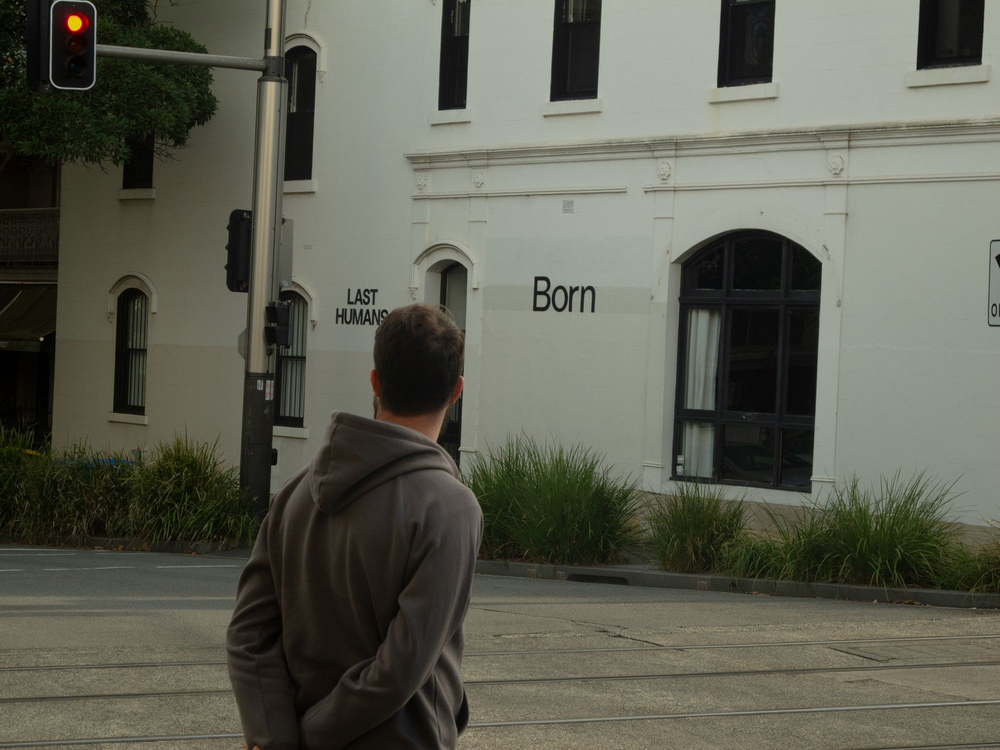

Jul 2026 · Portraits
[ More ]
Individual & family sessions
Natural-light headshots, family sessions, and milestone portraits which are shot on location or at home, never in a stiff studio setup.
From AUD 600[ More ]